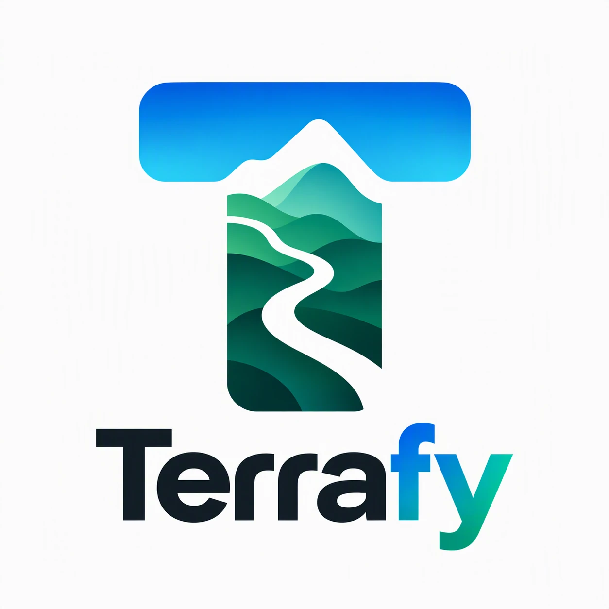
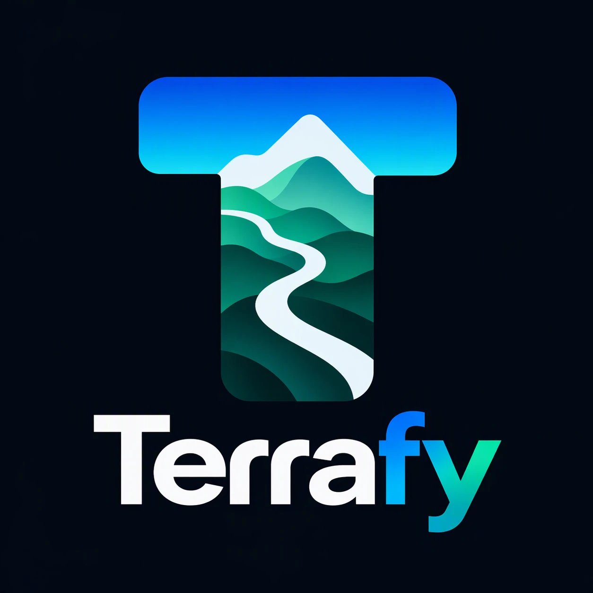

Terrafy


Your route. Made real.
Add your ride
Drop a GPX file from Strava here
Choose a file
Get GPX ↗
or try a demo:
⛰️ mountain loop
🏙️ city loop
How do I get a GPX from Strava?
Quickest:
paste the ride or route link above, tap
Get GPX
, then drop in the file it downloads.
Activity:
open the ride on strava.com →
⋯
menu →
Export GPX
.
Route:
open the route →
Export GPX
.
Everything runs in your browser. Your files are never uploaded.
Drop a ride to start
Your GPX becomes a printable relief map. You can also try the demo loop.
🏔️ Terrain
🏙️ City
Drag to orbit · scroll to zoom · right-drag to pan
Elevation profile
km / m
mi / ft
Click and drag across the chart to mark a segment
Add segment
×